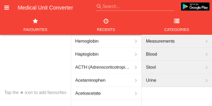
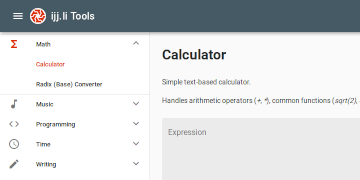
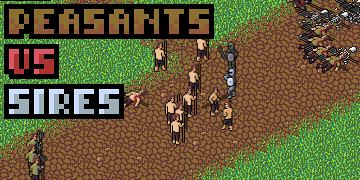
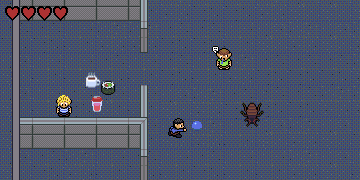
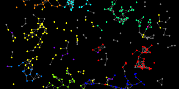
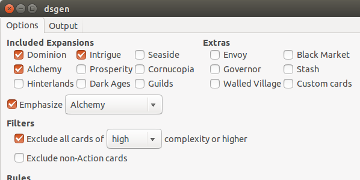

| Expert | Intermediate | Novice | |
|---|---|---|---|
| Razor-sharp |
Git
C#
JavaScript
English
|
Vue.js
Rust
Linux
JIRA
Docker
|
AWS
|
| Simmering |
SQL
Python
Django
Visual Studio
Haskell
|
||
| A little rusty |
Français
|
C
C++
Java
|
Android
|
Hi, I'm Paul, and I'm a programmer with an attention to detail, currently based in Victoria Canada. I'm a generalist with experience in full-stack web development and in building apps for desktop and hybrid mobile.
I completed my Bachelor of Mathematics at the University of Waterloo in 2013, and since then I've developed software for small companies like Reliable Controls, TelmedIQ, and Magnet Forensics.
When I'm not at work building data visualization and reporting software in JavaScript/C#, I'm typically hacking away at my personal coding projects, hiking on Vancouver Island, tuning up my commuter bicycle, indulging in a good video game, or getting in some good board game time with friends.
Education
-
Bachelor of Mathematics, Joint Honours Computer Science / Combinatorics & Optimization, University of Waterloo2009 – 2013
At UWaterloo I focused my studies primarily in computer science, cryptography, pure mathematics, and psychology. I also participated in two 4-month research assistantships (one part-time and one full-time) where I implemented privacy-preserving messaging software.
Experience
-
Software Developer, Reliable ControlsSeptember 2017 – Present
At Reliable I've been taking a leading role in modernizing a legacy system. I organized a cross-team decision to migrate from the Dojo web framework to Vue.js, migrated a build system to Webpack and TypeScript, established a "Clean Architecture" design for the web backend, and extended end-to-end/unit testing. My team has been transforming our product's rocky reputation into one of stability and rapid feature development.
-
Software Developer, TelmedIQNovember 2016 – August 2017
I helped TelmedIQ face the challenges of building a stable foundation out of its fast-moving startup roots. I organized sprint retrospectives and helped coach the team on Agile processes, which provided concrete data we could use to make our team better. On the programming side, I did a lot of Django development, with a little frontend work in Angular 1.
-
Systems Developer, Tesera SystemsApril 2016 – October 2016
At Tesera I built skills in front-end web development with React and Redux, and in back-end development with Node. As part of a very small distributed team, I also tackled AWS DevOps, UI/UX design, and product management when the team needed it to meet our goals. I pushed hard to introduce code reviews and unit test coverage to the team's lightweight processes, reducing the rate of defects. The highly-dynamic remote workplace and unfamiliar tech stack challenged me to be adaptable and independent, and to focus on strong communication.
-
Software Developer (Internal Tools), Magnet ForensicsNovember 2015 – March 2016
After two and a half years on product teams, I transitioned to a newly-formed Internal Tools role. This role was very self-driven; I worked mostly independently on redesigning the licensing system used to protect the products Magnet distributed, in addition to working with a small team to build test automation tools.
Beyond programming, I was highly involved in enabling and participating in continued learning with my peers at Magnet, and in applying and refining the Agile processes that my team followed.
-
Software Developer, Magnet ForensicsMay 2013 – November 2015
I began working at Magnet Forensics shortly before completing my undergraduate degree. My focus was on developing the Internet Evidence Finder software in C#, which on top of application programming involved UI design, multithreading, software architecture design, low-level filesystem and database knowledge, and thorough quality assurance. I personally spearheaded several large features and architectural improvements.
-
Undergraduate Research Assistant, University of WaterlooMay 2012 – August 2012
I worked under Professor Ian Goldberg to implement a provably anonymous protocol for posting messages to Twitter. My tasks involved full implementation of the protocol in Python, along with participating in the weekly meetings for the cryptography and security research group (CRYSP). While I decided against pursuing research after graduation, I found the exposure to academic research extremely valuable, and it is definitely something I am still considering for the future.
Showcase
I love having a side project on the go; sometimes it's for learning, sometimes it's for a challenge, and sometimes it's just for expression. Here's what I've been up to:
-
pshendry.github.io
This CV is hand-crafted artisanal HTML5/CSS3, 99.9% JavaScript-free and made with careful consideration of responsiveness, font size, and accessibility. -

Medical Unit Converter
A web+mobile tool for doctors, nurses, and students to convert lab results and common medical units. Built with PhoneGap, Vue.js and Framework7. -

ijj.li Tools
An assortment of handy utilities. Built with Nuxt.js and Vuetify. -

Peasants vs Sires
A simple two-player tug-of-war game written in JavaScript. -

DevQuest
Artwork and (some) coding for a hackathon game at Magnet Forensics in January 2015. -

nurep
A basic replay viewer for planets.nu games. -

dsgen
A utility for generating randomized card sets for the Dominion board game. -

Project Euler
Solutions to some of Project Euler's challenging mathematics/programming problems.
Contact
Feel free to contact me via email at paul@pshendry.com, or through one of the following other avenues: